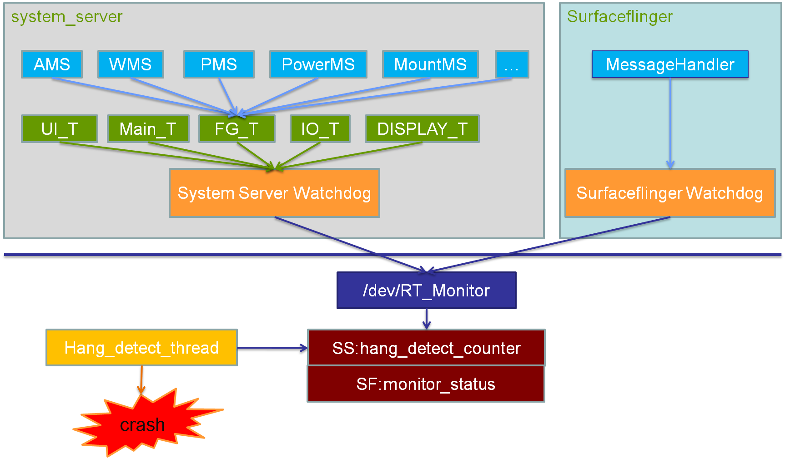
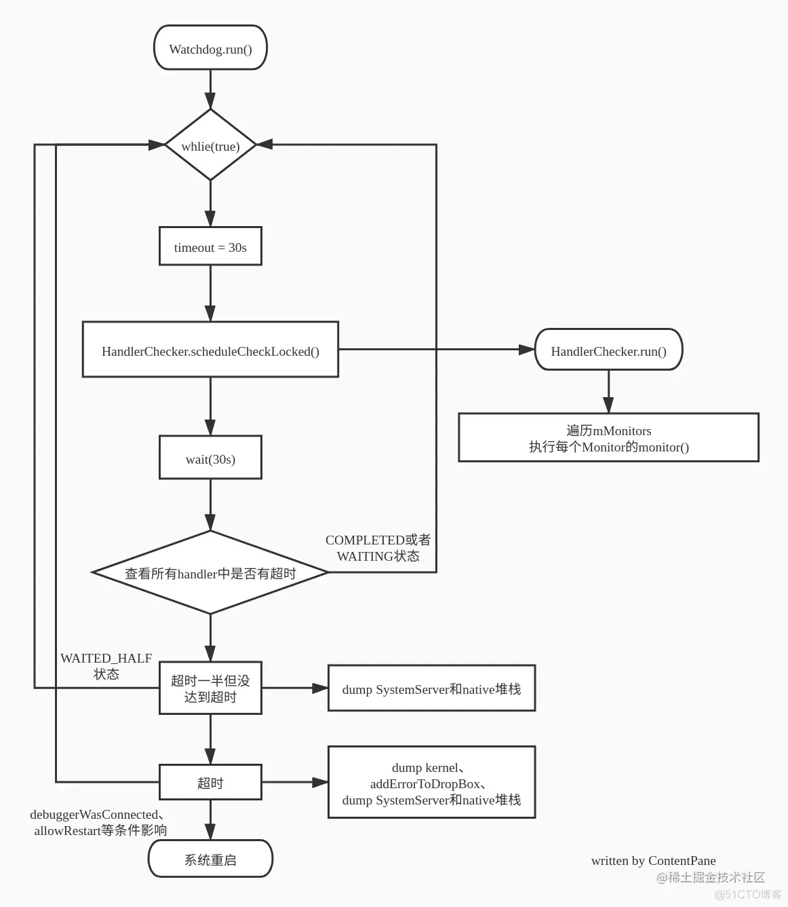

1. 目录
[TOC]
2. WatchDog（死锁+Looper----阻塞恢复机制）
主要参考：
https://blog.csdn.net/shift_wwx/article/details/81021257/
https://blog.csdn.net/qq_40587575/article/details/133682356 ----------> 比较精确的文章
https://blog.csdn.net/qq_43369592/article/details/123521848
https://blog.csdn.net/qq_27061049/article/details/130138701 Android 系统中的 WatchDog 详解 函数级+ 图
2.1. 目的
CPU级别的WatchDog（硬件）：可以在系统死掉(死锁或者程序跑飞)后重启系统，让系统回到可以工作的状态。-------> 系统级恢复
--------> TODO: 系统死掉，具体指的是啥？
安卓WatchDog（软件，系统服务级别，线程级别）： 保护一些重要的系统服务，比如AMS、WMS、PMS
------> TODO: 比较重要的：为什么不能全部？
Q: 如何保护？系统服务退出，init进程会重启SystemServer的？为什么还需要WatchDog？
A: 重启SystemServer前提： SystemServer进程中，任何一个线程死掉都可能导致整个系统死掉。
但是还存在死锁的情况，线程挂不了 -----------> 正是WatchDog设计的意义： 确保AMS、PMS、WMS等服务发生死锁之后，退出SystemServer进程，让init进程重启它，让系统回到可用状态。
2.2. 使用
全是各种服务在使用：
1、向Watchdog注册
// 死锁监控：
Watchdog.getInstance().addMonitor(this);
// 消息队列监控：
Watchdog.getInstance().addThread(mHandler);
2、heartbeat 心跳 回调
2.3. 原理
2.3.1. 0层架构图 ---->TODO： 不准确

来源： https://blog.csdn.net/qq_43369592/article/details/123521848
fg 线程
从线程角度：TODO
2.3.2. 一行核心代码：
// 往handler前面插入任务（插队）
mHandler.postAtFrontOfQueue(this);
检测到 抛过去的任务30s内，有没有执行完（任务被插到最前面）
2.3.3. Monitor Checker
用于检查 AMS，IMS，WMS PMS 等核心的系统服务 可能发生的死锁
public void monitor() {
synchronized (this) { } //获取AMS的this、wms的mGlobalLock等锁
}
1、检测是否有死锁----------主线程？？？ （android_fg 线程）：
回调时，监控 system_server 中几个关键的锁（在 android_fg 线程中尝试加锁），比如AMS的this、wms的mGlobalLock
------------> 如果有死锁，尝试加锁会阻塞Blocked在这里
2、检测到死锁，kill进程--------Watchdog线程：
TODO
2.3.4. Looper Checker
目的：
用于检查线程的消息队列 looper是否长时间处于工作状态
当前适用的一些范围：
Watchdog自身的消息队列，Ui, Io, Display这些全局的消息队列
一些重要的线程的消息队列，也会加入到Looper Checker中，譬如AMS, PKMS，powerMS ------> TODO: 线程不固定，如何做到的？
原理：
1、监控了哪些？
//AMS.java
Watchdog.getInstance().addThread(mHandler);
// Watchdog.java
private Watchdog() {
mMonitorChecker = new HandlerChecker(FgThread.getHandler(),
"foreground thread", DEFAULT_TIMEOUT);
mHandlerCheckers.add(mMonitorChecker);
// Add checker for main thread. We only do a quick check since there
// UI running on the thread.
mHandlerCheckers.add(new HandlerChecker(new Handler(Looper.getMainLooper()),
"main thread", DEFAULT_TIMEOUT));
// shared UI thread.
mHandlerCheckers.add(new HandlerChecker(UiThread.getHandler(),
"ui thread", DEFAULT_TIMEOUT));
// check IO thread.
mHandlerCheckers.add(new HandlerChecker(IoThread.getHandler(),
"i/o thread", DEFAULT_TIMEOUT));
// display thread.
mHandlerCheckers.add(new HandlerChecker(DisplayThread.getHandler(),
"display thread", DEFAULT_TIMEOUT));
// animation thread.
mHandlerCheckers.add(new HandlerChecker(AnimationThread.getHandler(),
"animation thread", DEFAULT_TIMEOUT));
// surface animation thread.
mHandlerCheckers.add(new HandlerChecker(SurfaceAnimationThread.getHandler(),
"surface animation thread", DEFAULT_TIMEOUT));
// Initialize monitor for Binder threads.
addMonitor(new BinderThreadMonitor());
.................
}
2、判断
mHandler.getLooper().getQueue().isPolling() // --------》 返回当前Looper是否没有在处理任务 <https://blog.csdn.net/oHeHui1/article/details/129058587>
Watchdog会不断判断这些线程的Lopper是否空闲，如果一直非空闲，那么必然就被阻塞了。
其他：
保存案发现场
WatchdogDiagnostics.diagnoseCheckers(blockedCheckers);
TODO:
为啥会和mSFHang，扯上关系？
2.3.5. 具体如何重启的？
// 结束进程 watchdog存在于system_server进程之下2
// 因为watchdog就是在system_server初始化的3
Process.killProcess(Process.myPid());
---------> 结论： 杀死system_server进程 ----------> TODO: 后续呢？ https://blog.csdn.net/weixin_43228946/article/details/129898004
扩展：mtk加强的重启：
pms.reboot(false, reason, false); // 掉电, 更加彻底
2.3.6. 安卓watchdog设计理念：
安卓watchdog设计理念：
检测到 抛过去的任务30s内，有没有执行完
跨线程的看门狗：c++
https://www.coder.work/article/3240296 c++ - 在 C++11 中实现看门狗定时器 ------> 同进程的！！！！！！！！
跨进程的看门狗：TODO: !!!!!!!!!
设计Aidl接口： 正向set的接口，反向通知接口 ------> 正向通知接口里 约束 必须反向通知
跟林的聊天记录：补充
为啥不以 进程状态显示为 "D" 表征进程正在阻塞？（因为我们还需要考虑busy running）
2.3.7. del:纵向流程图----字典

参考：android watchdog 重启 安卓 watchdog_小星星的技术博客_51CTO博客 https://blog.51cto.com/u_87634/6566226
2.3.8. del:每一行代码注释------字典
https://blog.51cto.com/u_87634/6566226
2.4. WatchDog本身
启动：
SystemServer.startBootstrapServices 中
本身是一个线程：无限循环的 --------> 可以理解为一个服务，但是不是binder
3. WatchDog 与 ANR比较
1、不同点：
(1) 进程角度：
WatchDog：同进程的 ： WatchDog线程对各种服务 TODO: 画图
TODO: 是不是跨进程也能这么玩？ 我在系统服务里，给APP主线程，插入一个任务，30s后，我再跨进程，查一下。。。。超时了，我就杀掉他
ANR: 跨进程：系统进程，对UI线程的监控
(2) 时机角度：
WatchDog 是 定期循环， ANR机制 是有input， 才会触发
-----------------> 并不是本质区别
2、相同点：
（1）检测内容一样：线程有没有 阻塞 + busy Running
（2）模型本质一样： 限定时间，给回调通知
-----------------> 感觉两者是同一个东西，不同场景的表达
4. del: TODO：补充 Linux 的Watchdog
Linux也引入了Watchdog，在Linux内核下，当Watchdog启动后，便设定了一个定时器，如果在超时时间内没有对/dev/Watchdog进行写操作，则会导致系统重启，通过定时器实现的Watchdog属于软件层面。
参考： https://blog.51cto.com/u_87634/6566226 android watchdog 重启 安卓 watchdog